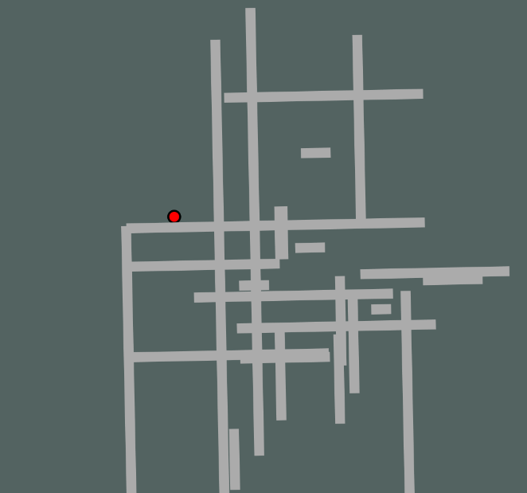
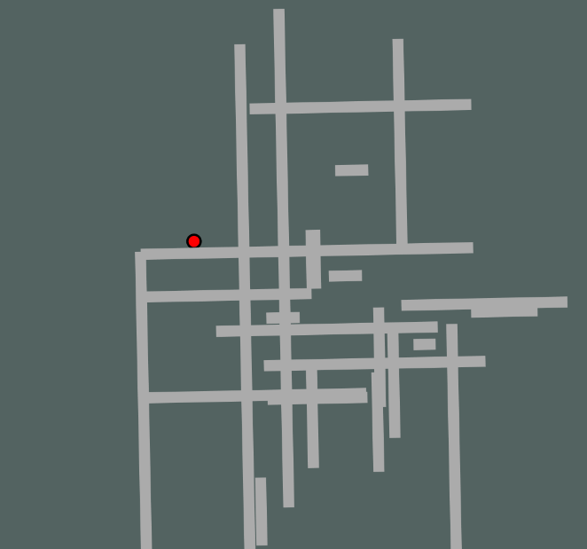
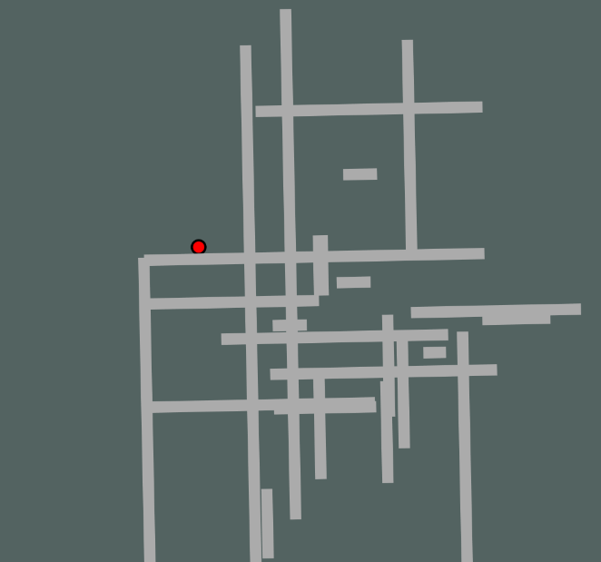

This is a small story about a man who has been turned into because he was told to be one, and now the ball and is trying to get into his complicated house. This would be a daunting task, however, he has the help of a certain friend at a computer to help him navigate and re-enter his home. You are the friend. You will be using the arrow keys to move the Ball Man around his home.

You use the arrow keys to move the maze around and let gravity control the ball.
Everytime you start this maze, the barriers will regenerate in a different spot and you will be moving the ball around. You can move the ball to wherever you think it would be the most comfortable, as this maze is actually the ball (formerly a man)'s house.

Thank you for all of your help. I did not know what turning into a ball would entail, nor did I consider how convoluted my own house was. I really am controlled by the will of gravity, and I must live with that, even when I am not a ball. Imagine if I had fallen! This is the way I like to live. I'll stick with being a ball. Please be my friend forever, and we can rotate and move around to new places.
Materials Used: p5js.org
Thank you to Garrett for help and teaching.